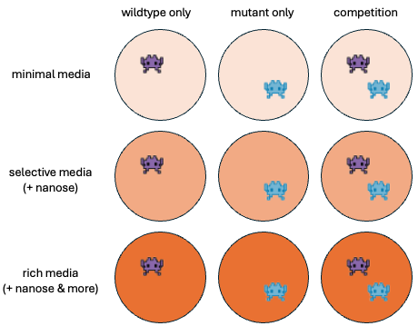

4-project-day-2
Final Class!
Now that you’ve been through the entire course, we want to reinforce some of the skills that you’ve learned by applying your knowledge to several existing datasets. In the previous class, you have completed the following steps:
Created a GitHub account.
Linked your GitHub account with your Longleaf account.
Created and pushed your first repository to GitHub.
Datasets
The following datasets represent some real-world data for you to practice your data wrangling and visualisation skills with. For each of these datasets (as many as time allows), we’d like you to do some basic analysis, including the following steps:
- Creating a directory for the analysis of this dataset, using best practices discussed in the previous class.
- Loading in the data.
- Performing some initial data exploration (What are the rows? What are the columns? How many samples does this dataset have? etc.)
- Identifying at least 1 research question that you could try to answer with this dataset.
- Formatting the data in a way that allows for this analysis.
- Visualize the data in helpful ways to answer your question.
- Make your code reproducible by using Github.
//TODO To help with your analyses, we have included a template document that you are welcome to use.
These datasets are listed roughly in order of increasing experimental/wrangling complexity — choose whichever you are most interested in! You may need to access the original data source to learn more about the metadata.
Western Africa Ebola public health dataset
Background: The Western African Ebola virus (EV) epidemic of 2013-2016 is the most severe outbreak of the EV disease in history. It caused major disruptions and loss of life, mainly in the republics of Guinea, Liberia, and Sierra Leone.
Data overview: The following data contains the dates for when each region updated their confirmed cases and deaths – consider how you might illustrate the dynamics of the outbreak.
Heat exposure in Phoenix, Arizona ecological dataset
Data source | Related publication
Background: Exposure to extreme heat is of growing concern with the rise of urbanization and ongoing climate change. Though most current knowledge about heat-health risks are known and implemented at the neighborhood level, less is known about individual experiences of heat, which can vary due to differences in access to cooling resources and activity patterns.
Data overview: The Central Arizona-Pheonix Long-Term Ecological Research Program (CAP-LTER) recruited participants from 5 Pheonix-area neighborhoods to wear air temperature sensors that recorded their individually-experienced temperatures (IETs) as they went about their daily activities – consider how you might represent the relationships between individual activity and neighborhood.
Obesity public health dataset
Data source | Related publication
Background: Rates of obesity have dramatically increased as more sedentary lifestyles and poorer diets become more widespread. Though the adverse health effects of obesity are well-documented, the factors that contribute to obesity are less understood, and many tools used to estimate obesity today only consider a limited few in their calculations.
Data overview: Individuals from Mexico, Peru, and Colombia were surveyed about their eating and lifestyle behaviors to produce this dataset which was used to develop tools to better identify factors influencing the emergence of obesity – consider which of the many data types may have interesting relationships to explore.
AVIDA experimental evolution dataset
// TODO: can trim some of this down bc i think its a little confusing lol esp for ppl who might not understand this as intuitively
Background: Avida-ED is an online educational application that allows one to study the dynamics of evolutionary processes. Digital, asexually-reproducing organisms known as “Avidians” can be placed into something akin to a virtual Petri dish to evolve in, and one can manipulate parameters such as mutation rate, resource availability, and dish size to study how those factors affect the evolution of the population.
Your friend needs your help to analyze their AVIDA-Ed data. They have designed a series of experiments around a mutant Avidian that gets an energy bonus when the sugar “nanose” is present and a wildtype Avidian that does not. They wanted to see how competition and resource availability affect the population dynamics of these Avidians.
Data overview: Time was measured in “updates”. Your friend grew either the wildtype only, mutant only, or both populations together (competition) in the following 3 environments:
Minimal (no additional sugars present)
Selective (only nanose present)
Rich (nanose and additional sugars present)
They collected data on the following population metrics: (reword: got a lot of data?)
Avg fitness (avg individual reproductive success; ranges 0-1)
Avg offspring cost (avg cost to reproduce, ranges >0)
Avg energy acquisition rate (avg rate of acquiring energy from the environment; ranges >0)
The population size (ranges from 1-900)
The viable population size (might remove this one bc confusing)
Help your friend get started with some of the exploratory data analysis. You can explore how combinations of genotype, competition, resource availability affect the population metrics – while you do not need to use all of the data files, you may need to mix-and-match different components of the data depending on your research question.
For teachers: may need to help students with joining dataframes, parsing out column names, pivoting, and hopefully not the biology parts… once the columns are pivoted they can just slap different metrics on there. can plot time series data.